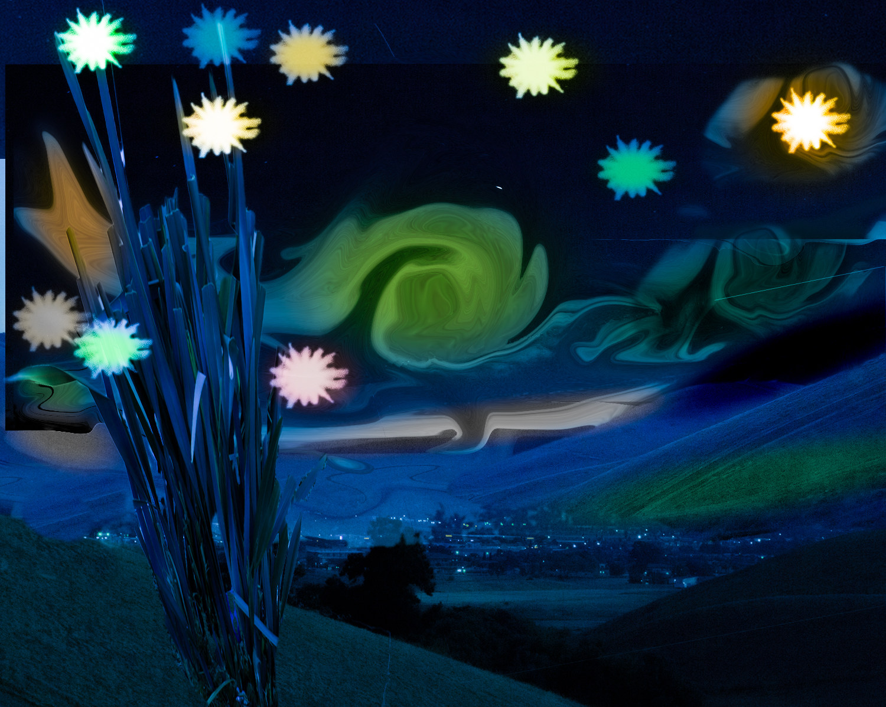
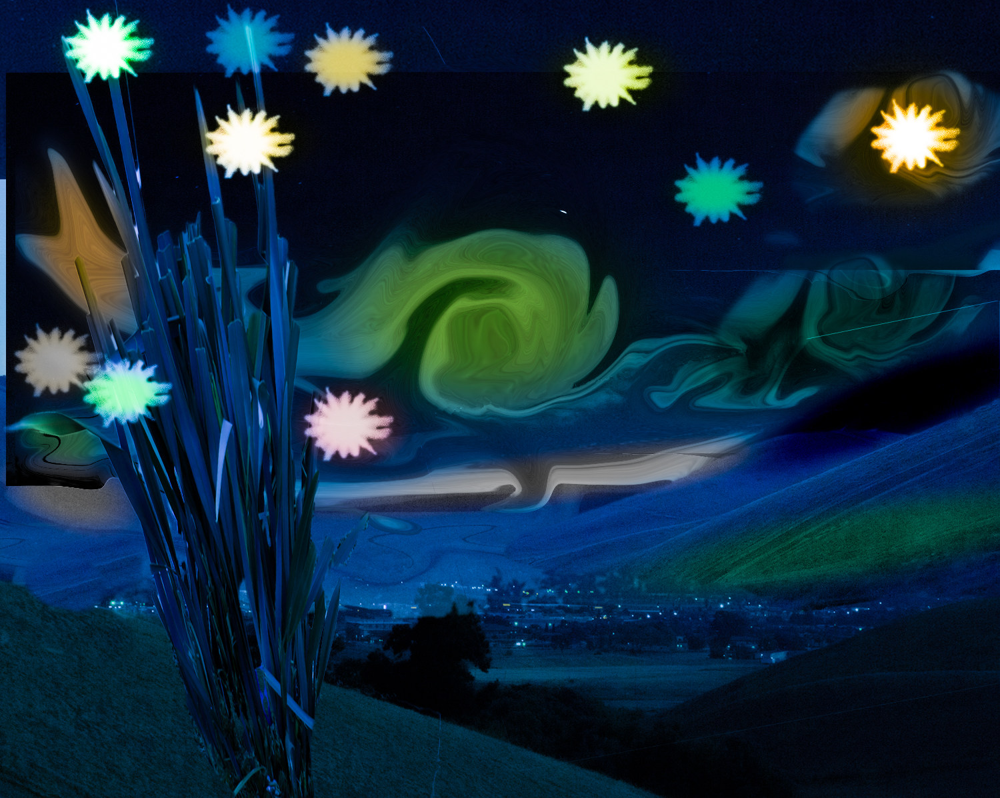
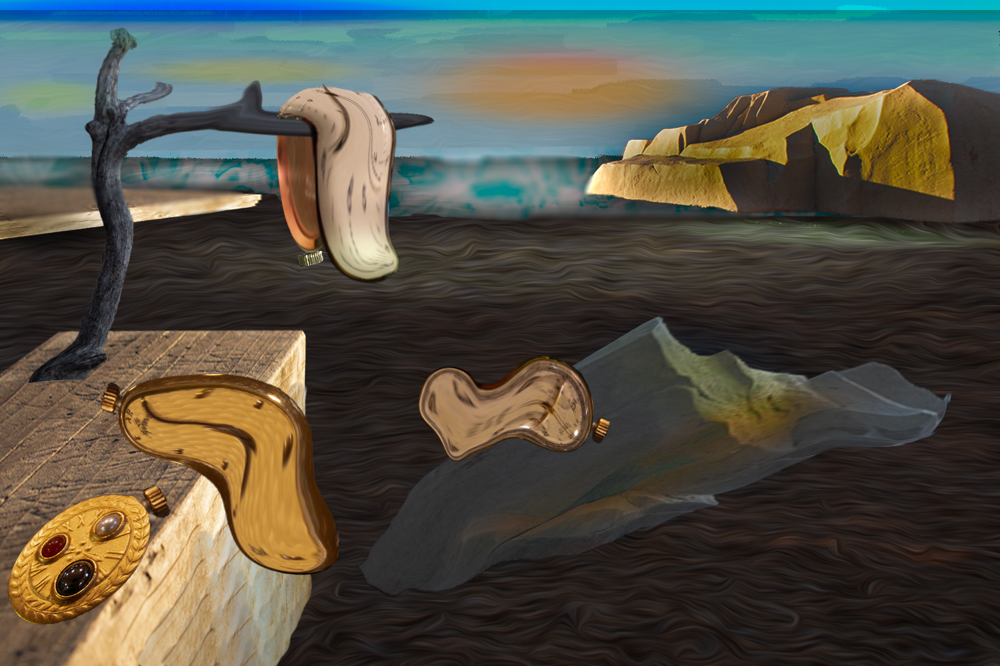
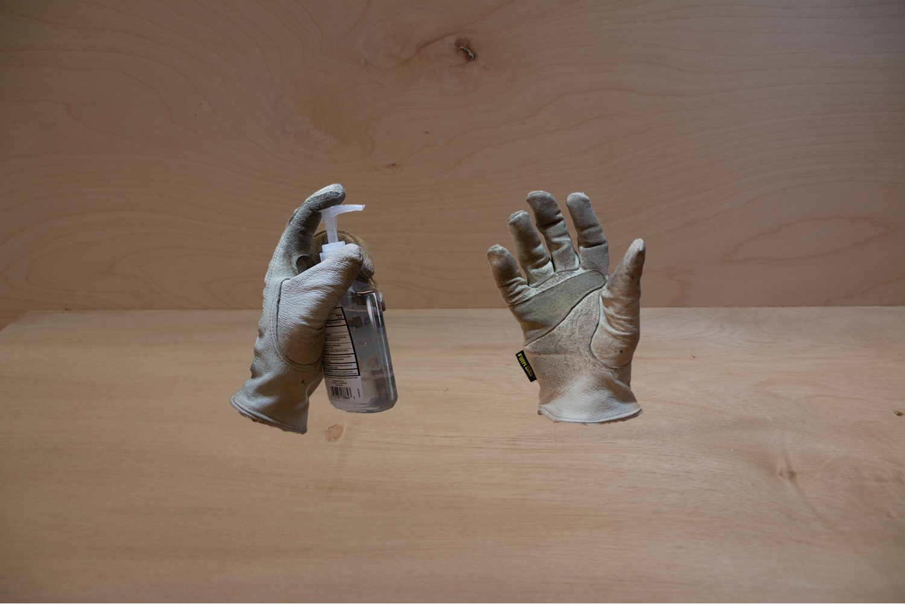

Van Gogh Replica
Demonstration of using Adobe Photoshop and LightRoom to take present-day digital photos and turn them into replicas of Impressionism Art.


Demonstration of using Adobe Photoshop and LightRoom to take present-day digital photos and turn them into replicas of Impressionism Art.
Another example of Demonstration of using Adobe Photoshop and LightRoom to take present-day digital photos and turn them into replicas of Impressionism Art.
Demonstration of a composite photograph using a collection of photographic images and editing them using Adobe Photoshop to create a convincingly realistic but impossible image. Inspired by Adam Ekberg's work, Gloves and Lighter and influenced by the Covid-19 Pandemic.
Using Adobe Photoshop to combine multiple photographic images and digital illustrations into one seamless portrait of a realistic epic battle scene. Main heroine originated from a picture of a D&D figurine.